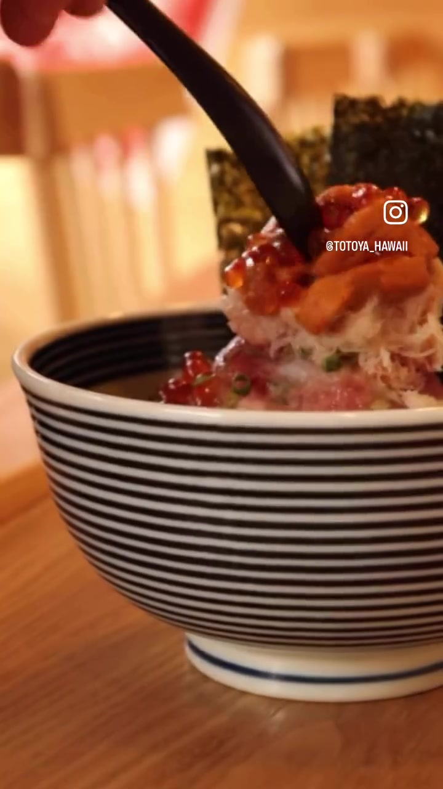

Sashimi bowls
A selection of seafood combinations, including salmon and tuna favorites.
Signature kaisendon, sashimi favorites, and a hand-roll set to share at home. Explore the highlights, then choose your location for the full menu.
$75 · Serves 2–3
Make your own hand rolls with seafood, sushi rice, and nori, ready to share around your table.
See the hand-roll set on Instagram
Find sashimi bowls, extra toppings, and sides on each location’s menu. The live ordering page has the full takeout selection.
A selection of seafood combinations, including salmon and tuna favorites.

Explore toppings such as uni and salmon roe on the live menu.

Choose a bowl for lunch, dinner, or takeout. We’ll see you at TOTOYA.